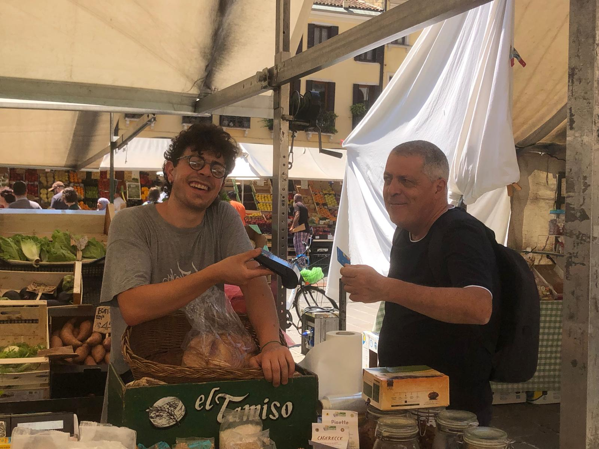

Me, myself, I
- Frutta di Luglio:
- Pesche Nettarine
- Pesche Gialle
- Albicocche
- Uva Vittoria
- Uva Fragola
- Susine Rosse
- Susine Gialle
- Pere Turandot
- Verdura di Luglio:
- Pomodori:
- Grappolo
- Peretto
- Cuore di Bue
- Costoluto
- Pomodorini:
- Datterino
- Ciliegino
- Piccadilly
- Insalata:
- Canasta
- Gentile
- Romana
- Pomodori:
Not only a verduraio
Hi, here’s my first webpage with a presentation of myself.
Between the two fighters…
After years of indecision between psychology and statistics, I have found my place at El Tamiso working as a shop assistant in Piazza delle Erbe
Thanks to this opportunity I got to experience and I achieved one of my most impressive results of the year, selling fruit and vegetables to my father (Figure 1).

DON’T TRASH BAD LOOKING FOOD
If you don’t want to see me angry pay attention, I will not repeat this again